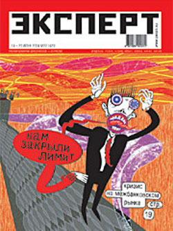
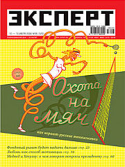
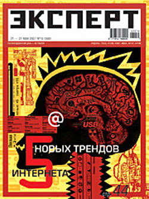
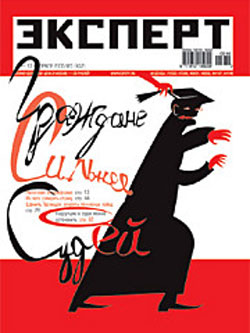
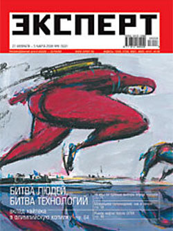

ПОТЕРЯ
Долой шапки, G8 и градиент
Печальная новость на как.ру.

Вообще я за глобализацию (как и Жегло, кстати). По крайней мере, в смысле художественного обмена. За Мондиализацию. Новому в наше время неоткуда взяться кроме как от того самого столкновения культур. Лучшие гены, говорят, у детей от смешанных браков. Я за путешествия, дружбу народов и за интернет. Но вот тут я не могу не объявить саммиту G8 бойкота.


Ушла, можно сказать, эпоха. Она, конечно, вернется, воскреснет, никуда не денется, но так смешно уже не будет. Теперь все уже будет не то. Жегловские обложки Эксперта — это большая, большая потеря.

Для той иллюстрации, которую я тут пытаюсь проповедовать, они были путеводной звездой, маяком правильной дурости. Многих и многих (в том числе многих, что особенно важно, наших с вами заказчиков) они пошатнули в кондовых представлениях о классной иллюстрации.
Не говоря о том, что когда солидный, авторитетнейший, без дураков, журнал, вместо традиционной постной физиономии корчил вот такие рожи, это было круто само по себе, и, как не парадоксально, только добавляло ему веса: значит, может себе позволить. К слову, именно Эксперт привел к нам тишковских водолазов и Батынкова.

Не скажу, правда, чтобы я купил ради обложки хоть один номер — дело в том, что эти обложки, за исключением двух-трех, может быть, мне вообще-то не нравятся. Это персональное. Быв осмеян и поруган, жегловский вот этот градиент по-прежнему действует на меня как нож по стеклу. Он все-таки самое отвратительное порождение компьютерной графики. Он воплощает все худшее в ней, все механическое, зализанное и мертвое.
Чрезвычайно важная в иллюстрации вещь осязание, тактильное ощущение. Глаз буквально ощупывает изображение, и на чистом градиенте проскальзывает, едет. Я все понимаю, но смотреть на него не согласен. Даже лучшие образцы трехмерки я могу рассматривать не раньше, чем посыплю на них в фотошопе хотя бы немного шума.
Иллюстрацию от чистого дизайна отличает (должно бы) в том числе отторжение всего механического и неживого. В компьютерной графике важно удалить всякий след участия в процессе самого компьютера. Из двух работ равного класса всегда приятнее взгляду будет та, что нарисована руками, с использованием, так сказать, аналоговых средств. Юного иллюстратора выдает с головой неспособность устоять перед искусом бесконечных возможностей цифровой графики.
С позволения, простой технический совет начинающим фотошоперам: не пользуйтесь инструментом paint bucket («ведерко»). Вообще. Ищите другие способы — их миллион. Рисуйте, например. И учитесь у Жегло. Учитесь свободе и кривоте, но с градиентами пусть он играется сам. Ему можно.